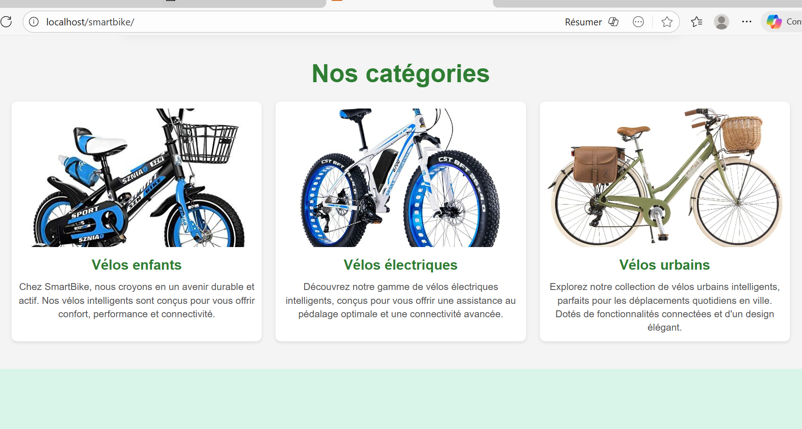
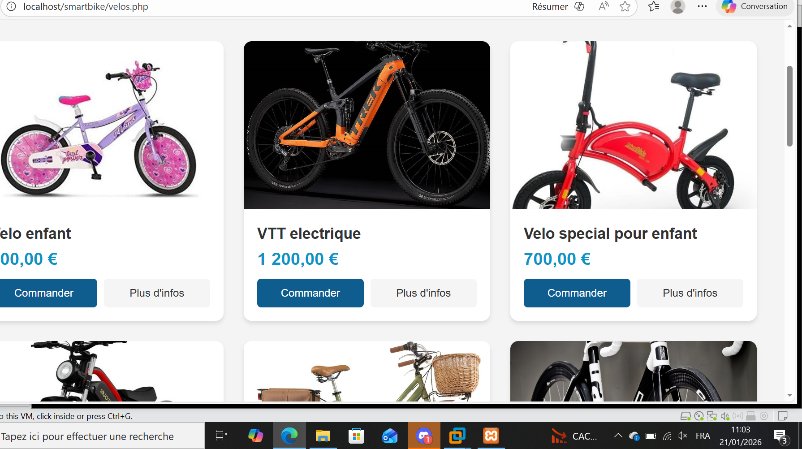

Étudiante en Architecture Réseau & Développeresse Fullstack | EPSI Paris
Mon LinkedIn 📄 Télécharger mon CVTechnicienne Réseaux & Services (Début le 04 Mai 2026)
Immersion professionnelle au sein d'une ESN spécialisée dans l'administration des infrastructures et les services managés pour les entreprises.
LinkedIn Learning • Avril 2026 [cite: 11, 13]
ID: 3lea00felc7ec8f4deecf8861f753e3b9933e9cf0c51e86a5bca7ec35e756438 [cite: 17]
LinkedIn Learning • Nov. 2025 [cite: 1, 3]
ID: e6e8755a4f360133d7d9e7d947ff772e68fca576cd4f6e28465c2fbfc3b9a5a9 [cite: 9]


Plateforme de vente de vélos. Application pratique de ma certification PHP/MySQL.
💻 Voir le CodeDéploiement complet pfSense, VPN et monitoring avec Zabbix/Wazuh.
📄 Dossier TechniqueRPG en Python mettant en scène des figures historiques africaines (Soundiata Keïta, Béhanzin).
Voir le CodeBackend performant pour la centralisation des données académiques.